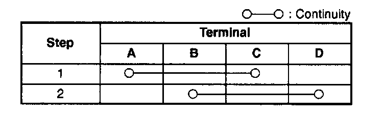
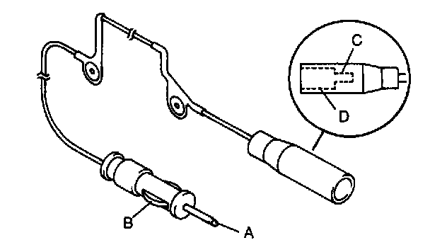

Rear Antenna Feeder
REAR ANTENNA FEEDER INSPECTION1. Remove the console.
2. Disconnect the connection between the front antenna feeder and the rear antenna feeder.
3. Remove the trunk side trim (LH).
4. Disconnect the connection between the rear antenna feeder and the power antenna. (With manual antenna: manual antenna)


5. Verify that there is no continuity between rear antenna feeder terminals A and B by using an ohmmeter.
6. Inspect for continuity between the rear antenna feeder terminals by using an ohmmeter.
7. If not as specified, replace the rear antenna feeder.